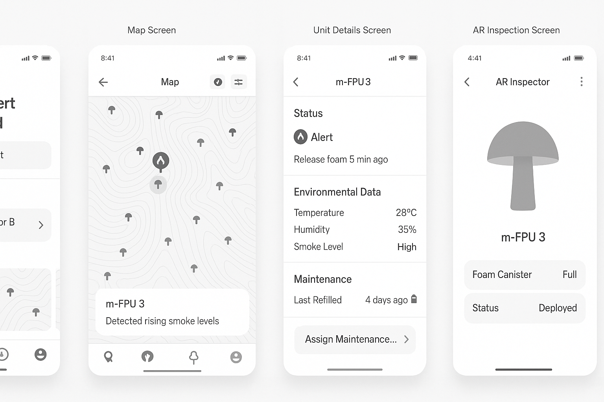

One of my favourite things to do is ideate and imagine bold solutions to real-world problems.
Recently, I came up with a concept for a device that could be installed in forests and
automatically
activated when a fire is detected nearby. In the coming months, I’ll be
developing this idea as if it were a real product — exploring its design, UX, and potential
impact.
If the idea sparks something in you, feel free to build on it — I’d genuinely love to see it come to life. I just ask that you bring me along for the journey and consider collaborating. Innovation is always better shared.
In the heart of vulnerable forests, a bio-inspired sentinel quietly stands watch — the
Mushroom Guard. This unassuming, mushroom-shaped pole blends naturally into the woodland,
but it's anything but ordinary.
Hidden within its organic silhouette is an advanced fire
detection and suppression system.
Equipped with heat sensors and air quality monitors, the Mushroom Guard activates when it
detects early signs of fire - such as elevated temperatures or smoke — within a 5-meter
radius.
Upon detection, it releases a biodegradable, non-toxic fire-retardant foam designed
to smother flames before they spread.
The foam forms a protective barrier on vegetation,
reducing the chance of ignition and buying critical time for emergency response teams.
Silent, sustainable, and smart - the Mushroom Guard represents a new wave of eco-technology where design meets environmental resilience.
The M-FPU is a passive, autonomous fire suppression device designed for early-stage wildfire
mitigation in forested environments.
Its structure mimics the form of a large mushroom to
blend with natural surroundings while maximizing surface area for sensor arrays and foam
dispersion.
I will be designing these in the following months and gathering your feedback.
Scenario: A forest ranger is alerted to 3 M-FPU units detecting smoke near Ridge Sector B.
Scenario:A family enjoying a picnic begins to smell smoke. Moments later, they spot a growing fire nearby, its flames quickly spreading through the trees.